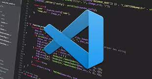
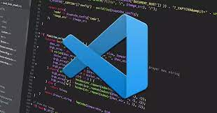

TRANFORMANDO IDEIAS
Em todas as etapas da construção do produto estamos prontos para ajudar. Seja uma aplicação móvel ou desenvolvimento web ou desktop
Ferramentas


 

DESENVOLVIMENTO DE SOFTWARE
O desenvolvimento de software é um processo complexo que envolve profissionais e etapas indispensáveis para o resultado da aplicação. Resultados perfeitos e satisfatórios são fruto de um longo tempo de trabalho, sempre estruturado a partir das necessidades que a entrega desse programa exige. Há dois profissionais indispensáveis à jornada: programador e desenvolvedor. O programador é quem tem o amplo conhecimento sobre as linguagens de programação e, na prática, sabe como realizar a estruturação do código que dará vida ao programa. Seu trabalho é mais operacional, com foco total na realização de testes e na atividade de dar vida ao software. Seu trabalho, naturalmente, não parte de uma tela em branco na qual ele precisa pensar em códigos complexos para dar vida ao programa. Ele parte de estruturas já prontas que são a espinha dorsal de uma aplicação, para então, usando as linguagens de programação, dar as características específicas que o software em questão terá, de acordo com o planejamento. Já o desenvolvedor tem uma função um pouco mais ampla e estratégica no desenvolvimento de um software. Seu papel é a concepção desse programa, por isso ele começa a agir antes mesmo do momento em que o programador começa a escrever o código. Para essa etapa ser concreta, é necessário entender quais são as necessidades do cliente e o que ele espera do software. O desenvolvedor é o profissional que faz essa ponte entre o cliente e o programador. No seu trabalho, toda a ideia do software é estruturada junto ao cliente, sempre considerando o que é possível de ser feito, a funcionalidade da aplicação e outros detalhes técnicos. O desenvolvedor pensa no software, planeja sua criação e, então, o programador começa o trabalho.